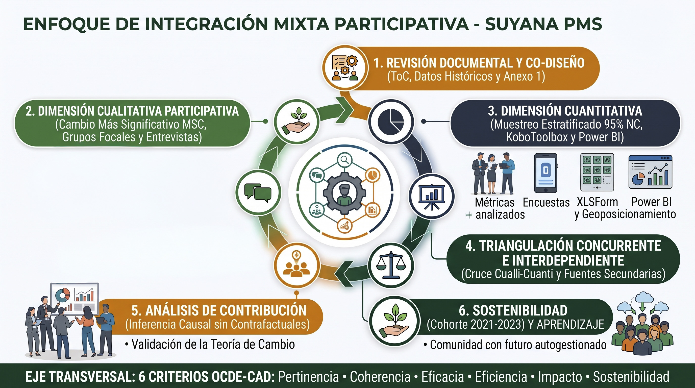

Resolución estratégica interconectada para la evaluación del Programa Municipio Saludable (PMS 2024–2026), su factibilidad de expansión urbana en El Alto (Distrito 4) y la consolidación del ecosistema KoboToolbox – ETL – Power BI (SSOT).

| Criterio CAD | Pregunta de Evaluación | Evidencia Requerida | Fuente / Unidad de Análisis | Método | Enfoque de Análisis |
|---|---|---|---|---|---|
| ★ 1. Pertinencia | ¿En qué medida el diseño integral del PMS respondió a las necesidades prioritarias en salud, educación y DESMA de los territorios? | Grado de alineación entre estrategias del PMS y demandas comunitarias/municipales. | Familias beneficiarias / Coordinación municipal. | Grupos Focales y Revisión Documental. | Cualitativo: Contextual y valorativo. |
| 2. Coherencia | ¿Cómo se articuló el PMS con las políticas municipales, salud (SEDES) y educación existentes? | Convenios activos, sinergias operativas y complementariedad con POAs locales. | Actores municipales / Equipo de Proyecto. | Entrevistas (KII) y Verificación Documental. | Cualitativo: Análisis institucional. |
| 3. Eficacia | ¿Se alcanzaron los resultados e indicadores de cobertura previstos durante el trienio 2024–2026? | % de cumplimiento de metas físicas y alcance territorial en los 4 subprogramas. | Bases KoboToolbox / Tableros Power BI / Equipo técnico. | Análisis Estadístico Descriptivo y Reuniones. | Cuantitativo: Varianza / Fact-based. |
| 4. Eficiencia | ¿Se utilizaron los recursos operativos y las 7 unidades móviles de forma oportuna y costo-efectiva? | Relación costo-tiempo-alcance logístico en despliegues territoriales. | Coordinadores de Subprograma / Unidades Móviles. | Entrevistas y Análisis Administrativo. | Mixto: Eficiencia operativa. |
| ★ 5. Impacto | ¿Cuáles fueron los cambios más significativos en las condiciones de vida y cómo contribuyó el PMS frente a otros factores? | Narrativas verificadas de transformación familiar/escolar (previstas e imprevistas). | Familias o unidades familiares beneficiarias. | Cambio Más Significativo (MSC) en Grupos Focales. | Mixto: Elucidación de mecanismos y Contribución. |
| ★ 6. Sostenibilidad | ¿Qué capacidades, prácticas y mecanismos de salud, educación y DESMA se mantienen activos en la cohorte 2021–2023? | Prácticas autogestionadas vigentes 3 años después del retiro directo de Suyana. | Familias y Actores Municipales (Cohorte 2021–2023). | Encuesta Estratificada + MSC / Grupos Focales. | Mixto: Triangulación concurrente ex-post. |
Desafío e Impacto: Al ser ejecutada por coordinadores y unidades móviles propias, existe riesgo de complacencia o pérdida de objetividad que reste credibilidad ante el Directorio.
Desafío e Impacto: Riesgo de realizar falsas inferencias causales ("sesgo del salvador") al carecer de grupo de control experimental para aislar el efecto exclusivo del PMS.
Desafío e Impacto: Datos del trienio distribuidos en múltiples fuentes con posibles inconsistencias que distorsionen las conclusiones empíricas.
Desafío e Impacto: Pérdida de memoria institucional sobre decisiones operativas o ajustes realizados al inicio del ciclo 2024 o en 2021–2023.
Desafío e Impacto: Desgaste muestral, migración familiar o cambio de autoridades en municipios egresados que sesgue la medición ex-post de Sostenibilidad.
| Fase / Prioridad | Actividades Principales y Subactividades | Sem 1 | Sem 2 | Sem 3 | Sem 4 | Actores Clave | Producto Esperado |
|---|---|---|---|---|---|---|---|
| Fase 1: Inmersión y Diagnóstico Prioridad Alta |
• 1.1 Revisión información secundaria: documentos, reportes y bases heredadas (Kobo/Power BI). • 1.2 Revisión del Modelo Lógico / ToC del PMS. • 1.3 Reuniones de alineación estratégica e institucional. |
██ ★ |
Impact Management (HQ Suiza), Dirección, Resp. Sistemas. | Diagnóstico de Evaluabilidad y Mapeo de Brechas de Datos. | |||
| Fase 2: Diseño Metodológico Prioridad Alta |
• 2.1 Diseño iterativo de la propuesta metodológica mixta participativa. • 2.2 Definición y cálculo de muestra estadística estratificada (95% NC). |
██ ★ |
Dirección de Programa, Equipo HQ Suiza. | Propuesta Metodológica y Diseño Muestral Aprobado. | |||
| Fase 3: Herramientas y Logística Co-diseño |
• 3.1 Co-diseño y validación de Matriz de Evaluación e instrumentos (XLSForms y Guías MSC). • 3.2 Planificación logística territorial con las 7 unidades móviles. |
██ ★ |
4 Coordinadores PMS (PROMSA, Odontología, Educación, DESMA). | Matriz e Instrumentos Validados + Plan Táctico de Campo. | |||
| Fase 4: Pilotaje y Calibración Terreno |
• 4.1 Despliegue del primer pilotaje de herramientas en terreno. • 4.2 Ajuste final de instrumentos y protocolos post-piloto. |
██ ★ |
Equipo de Campo, 7 Unidades Móviles, Esp. MEAL. | Kit Evaluativo Calibrado listo para despliegue masivo. |
| Categoría de Información | ¿Qué necesita saber? | ¿Por qué es crítico? | ¿Cómo se obtendría? | ¿Qué decisión permite tomar? | Indicador / Dato Clave de Investigación |
|---|---|---|---|---|---|
| 1. Dinámicas Demográficas y Socioculturales | Multilocalidad y migración aymara, deserción escolar y dinámica familiar periurbana. | El D-4 no es rural; el hacinamiento y movilidad diaria exigen horarios y enfoques distintos. | Cartografía Censo 2024 (INE), SIE Distrital y Grupos Focales con Juntas Vecinales. | Orientar Educación hacia retención escolar urbana, apoyo técnico y prevención de violencia. | D-4: 107.147 hab. 82 urbanizaciones y 51 Unidades Educativas (alta densidad). |
| 2. Economía y Medios de Vida Urbanos | Subempleo juvenil, comercio informal y viabilidad real de huertos urbanos. | El modelo agrícola rural DESMA fracasa si depende de subsidio o si venden todo sin autoconsumo. | Estudios UMSA/CEDLA, mapeo de ferias (Wali Sumita / EcoHuertas) y encuestas. | Pivotar de carpas aisladas a Carpas Comunitarias/Escolares, economía circular y BTH juvenil. | Índice AUP < 0.65 Estudio 2025: baja sostenibilidad de carpas familiares aisladas. |
| 3. Mapeo de Actores y Gobernanza | Presencia de ONGs, GAMEA, Subalcaldía D-4, FEJUVE, Juntas Escolares y COLOSAS. | Territorio altamente politizado con rotación de subalcaldes y disputas por áreas de equipamiento. | Stakeholder Mapping, revisión POA D-4 y entrevistas a informantes clave (KII). | Construir una Licencia Social Tripartita (GAMEA/SEDES + FEJUVE + Escuelas) y microfocalizar 2–3 sectores. | 82 Juntas Vecinales Alta rotación en Subalcaldía D-4 exige blindaje institucional. |
| 4. Salud Integral y Riesgo Ambiental | Saturación de la Red Los Andes (CS San Felipe de Seke) y focos infecciosos del Río Seke. | La suplementación con hierro fracasa si hay reinfección parasitaria por aguas contaminadas. | Registros SNIS-VE / SEDES La Paz e informes de auditoría ambiental (Contraloría). | Reorientar Unidades Móviles a tamizaje escolar y exigir agua segura / saneamiento ambiental. | Río Seke Contaminado Descargas de mataderos clandestinos y 17.328 hab/centro salud. |
| 5. Lecciones Aprendidas Previas | Aciertos, barreras y adaptaciones de ciclos previos del PMS y programas activos en La Paz. | Capitaliza activos institucionales existentes y evita repetir errores operativos en el piloto. | Sistematizaciones previas, evaluaciones de Suyana y talleres con equipo histórico. | Desplegar becarios universitarios aymaras (UMSA/UACs) como brigadistas técnicos comunitarios. | Activo: Beca Generación Convenios vigentes Suyana–UMSA y SEDES La Paz. |
| Fase del Ciclo DQA / Tarea | Equipo de Campo | Coordinadores Programa | ★ Especialista MEAL (Foco) | Responsable Sistemas | Impact Mgmt (HQ) | Dirección Programa |
|---|---|---|---|---|---|---|
| 1. Prevenir el error (en origen vía diseño XLSForm y en registro de campo) | R (Captura) | A | R / C (Diseña reglas) | C | I | I |
| 2. Identificar el error (mediante rutinas automatizadas de validación DQA) | I | I | R / A (Audita) | C | I | I |
| 3. Comunicar el error (alertas focalizadas y tableros de seguimiento) | I | C | R / A (Reporta) | I | I | I |
| 4. Corregir el error (en fuente primaria o vía limpieza automatizada ETL) | R (Dato campo) | A | R (Vía ETL) / C | C | I | I |
| 5. Verificar la corrección (validación de integridad antes de pasar a Power BI) | I | C | R / A (Valida SSOT) | I | I | I |
| 6. Analizar errores recurrentes (diagnóstico de causa raíz humana vs. sistema) | C | C | R / A (Lidera análisis) | C | C | I |
| 7. Decidir cuándo escalar un problema (fallas estructurales o incumplimiento grave) | I | C | R (Propone escalar) | C | C | A (Decide) |
Bloqueo preventivo en KoboToolbox durante el llenado (0% retrabajo posterior):
required = yes. El formulario impide avanzar sin respuesta.constraint: . <= today() con mensaje de alerta inmediato.choice_filter por municipio) para mostrar solo comunidades válidas.today) o valor por defecto bloqueado (read_only = yes).Automatización vía Python / Power Query conectada por API a KoboToolbox:
username / ID del dispositivo y corrige automáticamente la asignación de equipo.ID_Beneficiario + Fecha + Subprograma) antes de publicar en el modelo semántico de Power BI (SSOT).Gestión del cambio empática y focalizada para "Registros Duplicados" (35 casos):
“Un sistema MEAL de excelencia no añade carga burocrática al terreno: blinda la calidad del dato en el origen, convierte la evidencia en decisiones estratégicas oportunas y transforma cada intervención rural o urbana en aprendizaje vivo para las familias bolivianas.”